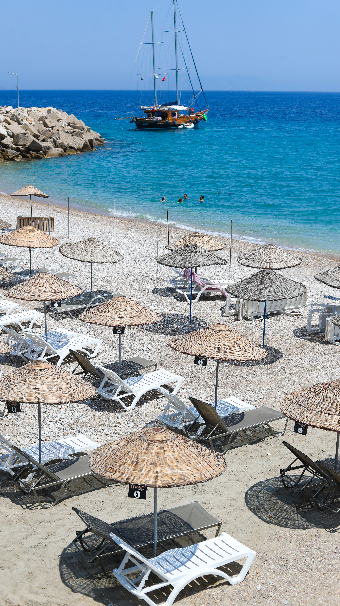
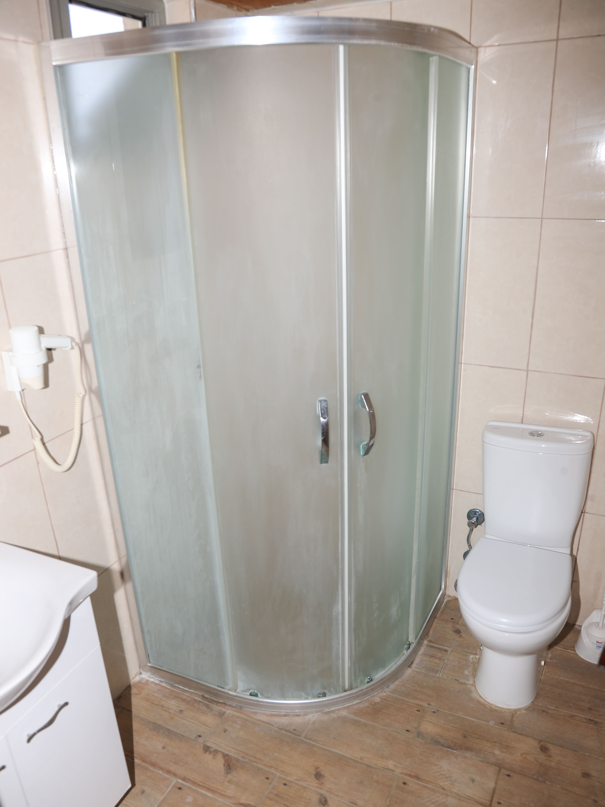
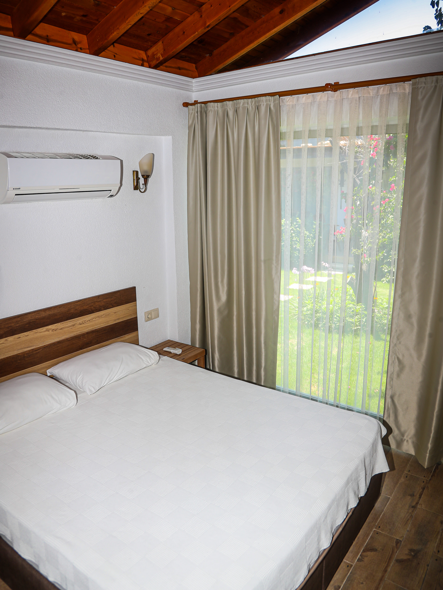
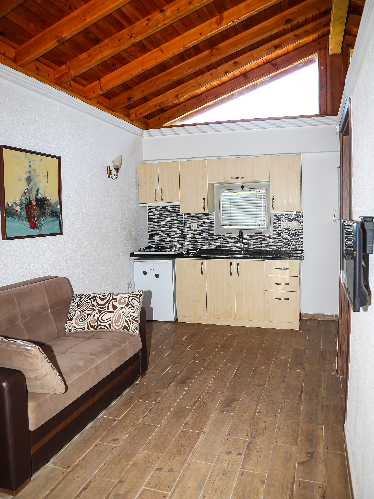
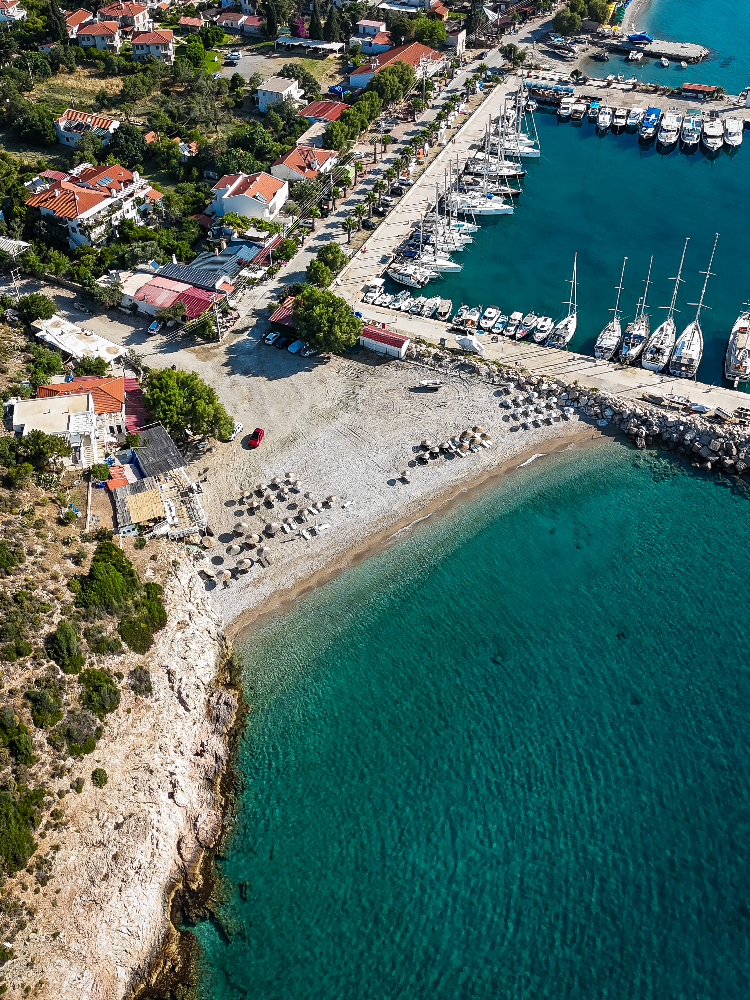
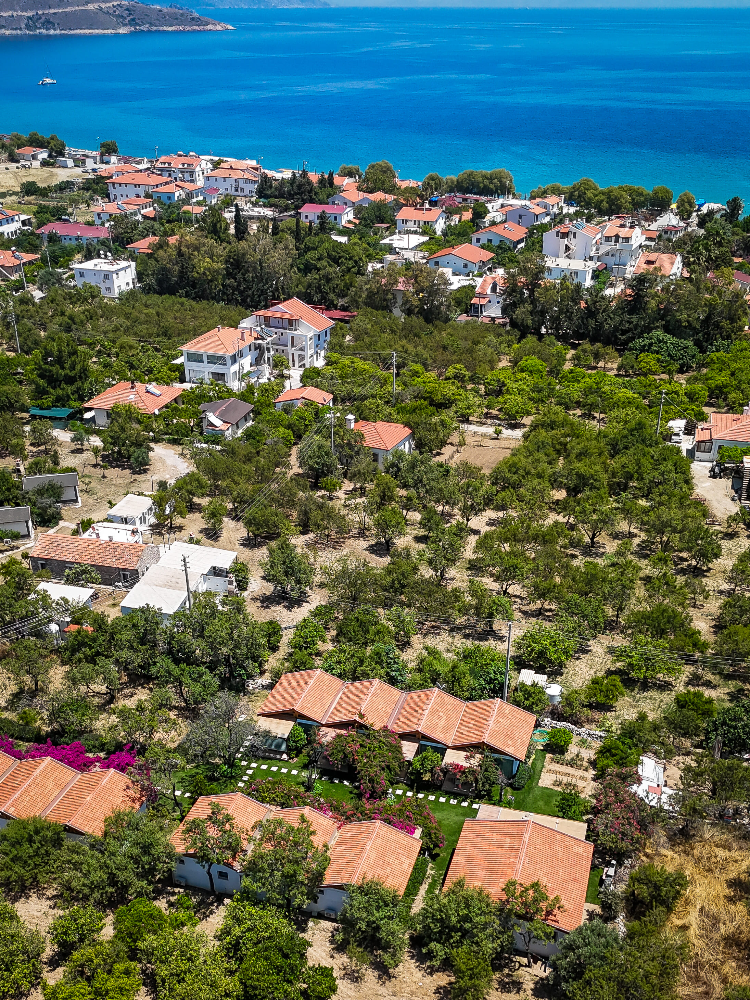

Galeri






Datça Palamutbükü'nün eşsiz doğasında, begonviller arasında saklı bir cennet.
Rezervasyon YapTesisimiz Datça Palamutbükü'nün muhteşem doğasında, denize sadece 3 dakikalık yürüme mesafesinde yer almaktadır. Zeytin ağaçları ve begonvillerle süslü yemyeşil bahçemiz içinde, misafirlerimize kendilerini evlerinde hissedecekleri huzurlu ve konforlu bir konaklama deneyimi sunuyoruz. Her detayı özenle düşünülmüş apartlarımızda şehrin stresinden uzaklaşıp doğanın sesini dinleyebilirsiniz.






Google üzerinden bizleri değerlendiren değerli misafirlerimizin yorumları.
Datça'nın eşsiz doğasını ve tesisimize yakın harika yerleri keşfedin.
Geniş sahili ve berrak deniziyle huzurlu bir koy.
Kapalı bir koy olduğu için dalgasız, sığ ve kumlu harika bir plaj.
Turkuaz rengi suyuyla adeta doğal bir akvaryum.
Ege ile Akdeniz'in birleştiği noktada tarihi ve doğal bir güzellik.
Akvaryum gibi berrak deniziyle çam ağaçlarının arasında gizli bir cennet.
Sakin, bakir ve doğayla baş başa kalabileceğiniz huzurlu bir koy.
Yeşil günler uygun, kırmızı günler ise tüm apartlarımızın (7) dolu olduğunu gösterir.
Cumalı, Palamutbükü sokak no:117
48900 Datça/Muğla